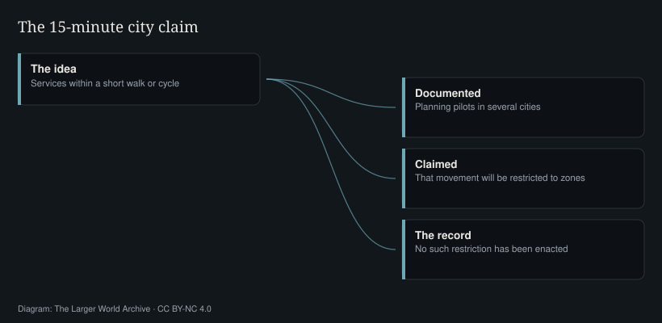

The claim
The claim holds that '15-minute city' planning — the idea that daily needs should be within a short walk or cycle — is a cover for restricting residents to their neighbourhoods. It has been repeated by national politicians and in protests.
Maps, diagrams and images

The problems
The concept, developed by Carlos Moreno and adopted by several cities, is about access to services and transport, and no adopted plan restricts movement. The claim inverts the proposal: it is about making neighbourhoods work better, not about confinement.
The archive files it as debunked.
Documented: the planning concept.
Documented: the claim and its spread.
Not established: any confinement scheme.
The inversion: access versus restriction.
The label: debunked.
Why it is in the archive
Because it is a case where a real planning idea was rewritten into a threat.
Open resources on this topic
- PapersOpen-access articles: DOAJ · PubMed Central · Internet Archive Scholar
- BooksPublic-domain and borrowable copies: Open Library · Project Gutenberg · Google Books · Internet Archive
Cite this page
Momin, S. (2026). The 15-Minute Lockdown. The Larger World Archive. https://drsamonline.github.io/LARGE_GLOBE/15-minute-lockdown.htmlMomin, Sohil. “The 15-Minute Lockdown.” The Larger World Archive, 2026, https://drsamonline.github.io/LARGE_GLOBE/15-minute-lockdown.html.Momin, Sohil. “The 15-Minute Lockdown.” The Larger World Archive, 2026. https://drsamonline.github.io/LARGE_GLOBE/15-minute-lockdown.html.@misc{the202615,
author = {Momin, Sohil},
title = {The 15-Minute Lockdown},
year = {2026},
howpublished = {The Larger World Archive},
url = {https://drsamonline.github.io/LARGE_GLOBE/15-minute-lockdown.html},
note = {Last reviewed 20 November 2026}
}Last reviewed 20 November 2026 · Corrections policy · this page is not peer reviewed
Sources for this page
- Wikipedia, “15-minute city” — the concepten.wikipedia.org
- Wikipedia, “Urban planning” — the fielden.wikipedia.org
- Wikipedia, “Conspiracy theory” — the categoryen.wikipedia.org
- Wikipedia, “Walkability” — the goalen.wikipedia.org